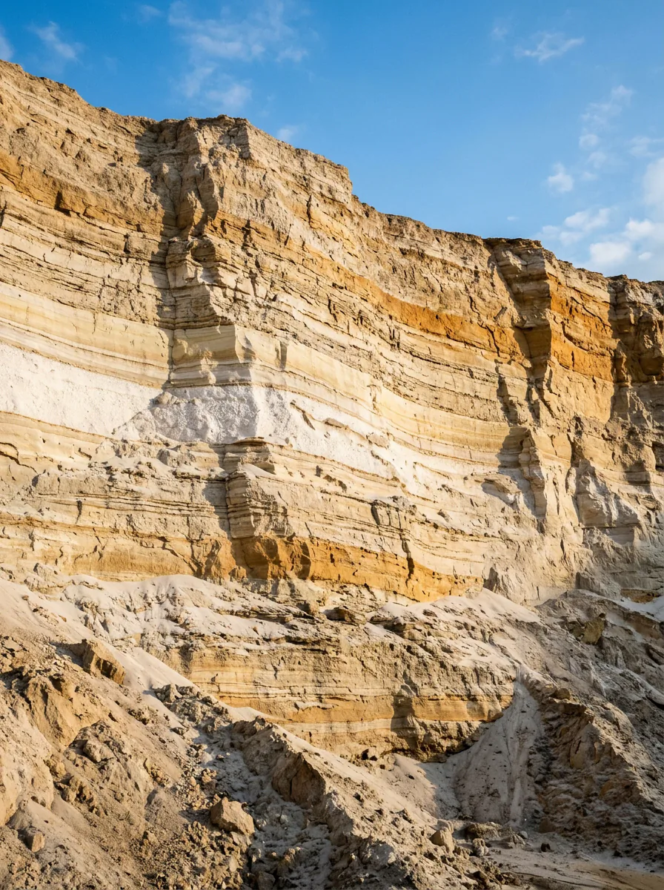

Brand guidelines · Version 2.0
One header. Six names.
GHANSHYAM GROUP and its five companies share one logo. The header, the G with its sand wave and the GHANSHYAM wordmark, never changes. Only the label beneath it names the company. That is how the group stays recognisable on a truck, a bag of sand, a spec sheet or a website.
01 · Logo
The logo and its labels.
The G is cut by flowing lines, like wind across a dune. One band of sand runs through it in Glass Edge. Beneath sits the GHANSHYAM wordmark, and beneath that the label, set between two rules.
The family
Every company uses the same header. Only the label changes.
On dark backgrounds
The reversed version: Quartz White for the G, wordmark and label, with the wave lifted to a lighter Glass Edge.
For slim spaces
The horizontal lockup uses the same parts side by side. Use it where height is short: the website header, letterheads, email signatures.
Clear space and size
- Clear space the height of the GHANSHYAM letters, on every side
- Stacked at least 160 px wide on screen, 35 mm in print
- Horizontal at least 180 px wide on screen, 40 mm in print
- Mark alone at least 24 px on screen, 8 mm in print
Logo files
Every lockup as SVG (any size, print) and transparent PNG (documents, slides).
Please don't
02 · Colour
Built from the logo.
The logo's three colours are fixed and never change. The website takes its palette from them: Deep Slate for text, Shale for supporting text, Glass Edge for the one main action, all on Quartz White.
Logo colours (fixed)
Website palette
Company markers
Each company has a marker colour that tells its pages and cards apart. Small decorative marks only: dots, card edges, icons, a drawn line, and a faint wash behind the company's first screen. Never on the logo, never for text.
03 · Typography
The logo's typeface, everywhere it speaks.
Montserrat is the typeface of the wordmark and the labels, so it sets every headline too. A quiet body face carries the reading, and a mono face makes specs read like a lab report.
Five grades. One standard.
Each grade is washed, classified, dried and tested to a written spec. Pick the grade for your process and we hold it there, load after load.
SiO₂ 99.2% MIN · Fe₂O₃ 0.035% MAX · 30 TO 150 MESH
| Token | Use | Size |
|---|---|---|
| --fs-hero | Hero headline | 40 to 92 px |
| --fs-h1 | Page and hero captions | 35 to 70 px |
| --fs-h2 | Section titles | 30 to 54 px |
| --fs-h3 | Card and panel titles | 20 to 28 px |
| --fs-lede | Section introductions | 18 to 21 px |
| --fs-body | Running text | 17 px |
| --fs-mono | Section labels and spec labels | 13 px, capitals, tracked |
Headlines in sentence case with a full stop. Body text never smaller than 15 px.
04 · Icons and motifs
Drawn with one pen.
24 px line icons with a 1.6 px stroke and round joins. Three motifs carry the brand across the site: the short rule before every section label (taken from the logo's label rules), the sieve scale on every grade, and quarry strata in imagery.
Quality assurance
The section label, with the logo's rule05 · Imagery
One bright, calm world.
Two kinds of picture. Close views of the product in a calm studio: pale stone, quartz white sand, soft daylight, gentle shadows, close enough to see the grain. And the places where the work happens, the quarry, the plant and the farm, in natural light. Nobody posing, no stock handshakes, no text or logos inside images.

New photos follow the same direction. People appear at work and at ease, never posed. Product close-ups sit on pale stone or pale grey.
06 · Motion
Nothing snaps.
Motion explains, it never decorates. Every change eases. Scroll drives the story; the visitor is always in control and can scroll back.
- Arrivalscubic-bezier(.22, 1, .36, 1)
- State changescubic-bezier(.65, 0, .35, 1)
- Entrances720 ms, 90 ms stagger
Only transform and opacity animate. Visitors who turn on "reduce motion" see every element in its finished state, and the scroll scene is replaced by a still.
07 · Voice
Say it like the buyer would.
Plain, short and certain. Use the words buyers use about their own problems: in spec, every load, test report, uninterrupted supply. Promise only what the plant can prove.
Write
- "The same sand, every load."
- "A test report travels with every truck."
- "Clay out. Iron out. Moisture under 0.5%."
Avoid
- Corporate filler and vague promises
- Claims without a number behind them
- Long dashes. Use commas and full stops.